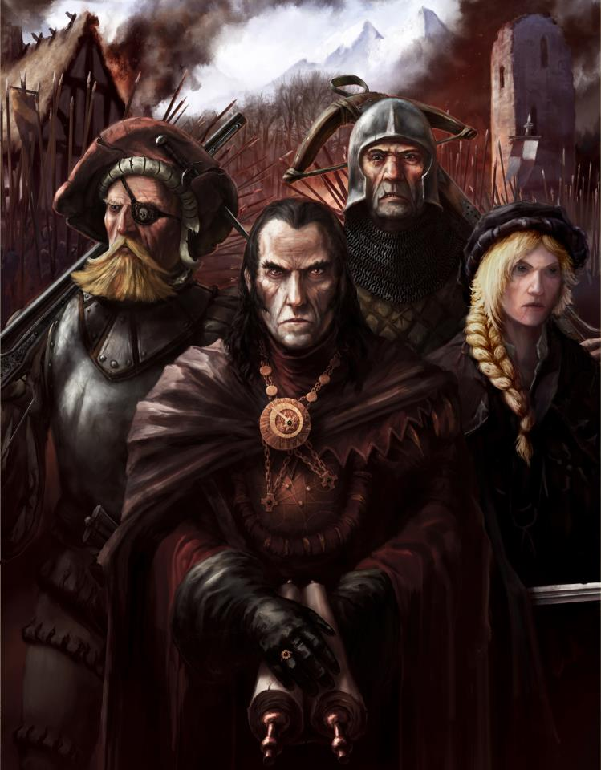
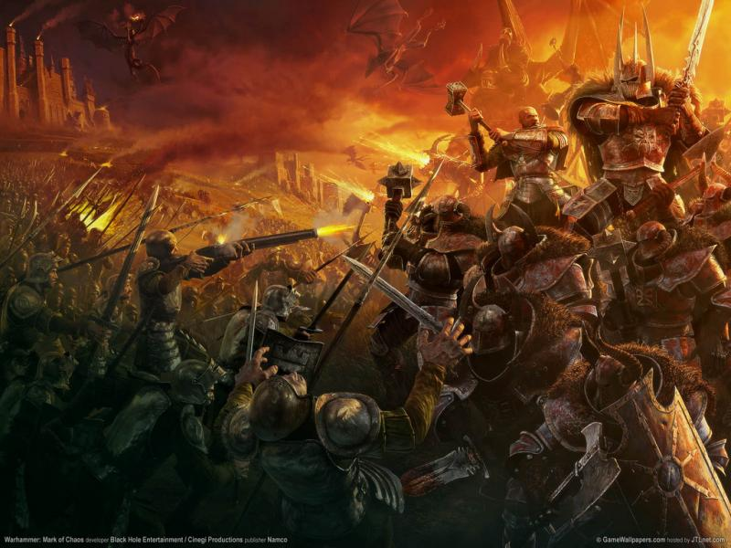

ABOUT WARHAMMER WORLD
Old World

The Old World, the area where most human nations are based, is usually defined as the area west of the World's Edge Mountains, north of Blood River and the Dwarf sea fortress of Barak Varr and south of Troll Country.
It is roughly equivalent to historical Europe in the real world. While Norsca is not technically part of the Old World, it shares cultural similarities with it, and is closest to the Old World in terms of distance.
The Isle of Albion is also off the coast of the Old World and is similar in it's situation to Norsca, being neither a part of the Old World or entirely separate from it.


Copyright by KUBA ©